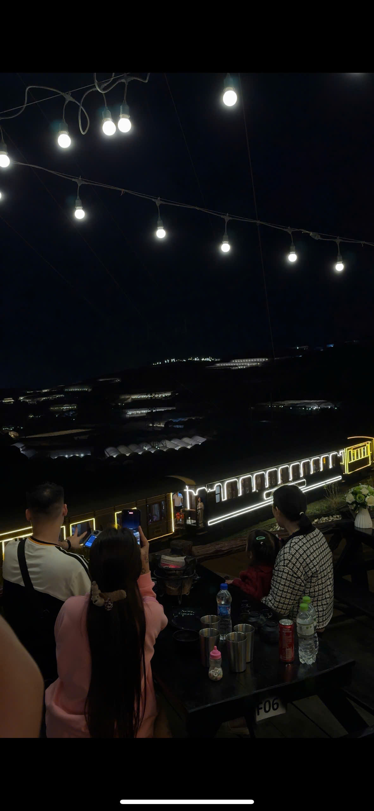

1. Nướng BBQ ngắm biển sao nhà lồng
Highlight số 1 của Đà Lạt về đêm! Tại Trạm Dừng Chill, sau 18:30 hàng ngàn nhà lồng đồng loạt lên đèn, tạo nên biển sao lung linh giữa thung lũng. Vừa nướng BBQ nóng hổi, vừa ngắm view đêm — trải nghiệm đáng nhớ nhất!

2. Dạo chợ đêm Đà Lạt
Chợ đêm Đà Lạt hoạt động từ 18:00-23:00 mỗi ngày. Bán đủ thứ: quần áo, đồ handmade, đặc sản. Ăn vặt ở đây cũng rất phong phú: bánh tráng nướng, sữa đậu nành, ốc nóng.
3. Cafe đêm Đà Lạt
Đà Lạt có hàng chục quán cafe mở đến khuya. Nhiều quán có view đẹp, nhạc acoustic, không gian ấm áp. Gọi ly cacao nóng hoặc cafe sữa đá giữa trời se lạnh — cảm giác rất Đà Lạt.
4. Xe máy dạo phố đêm
Chạy xe quanh hồ Xuân Hương, lên đồi Robin ngắm thành phố lên đèn. Đường phố Đà Lạt về đêm yên tĩnh, mát mẻ — rất thích hợp cho couple lãng mạn.
5-8. Xem phim, karaoke, bar và săn mây đêm
Đà Lạt có rạp phim, quán karaoke, bar nhạc sống cho ai thích sôi động. Nếu thích yên tĩnh, thử đi săn mây đêm ở đèo Mimosa — sương mù tràn qua rừng thông dưới ánh trăng, cảnh tượng huyền ảo.
Kết luận
Đà Lạt về đêm có rất nhiều thứ để làm! Gợi ý lịch trình: ăn nướng tại Trạm Dừng Chill từ 17:00-21:00, sau đó dạo chợ đêm hoặc cafe chill. Đặt bàn ngay!